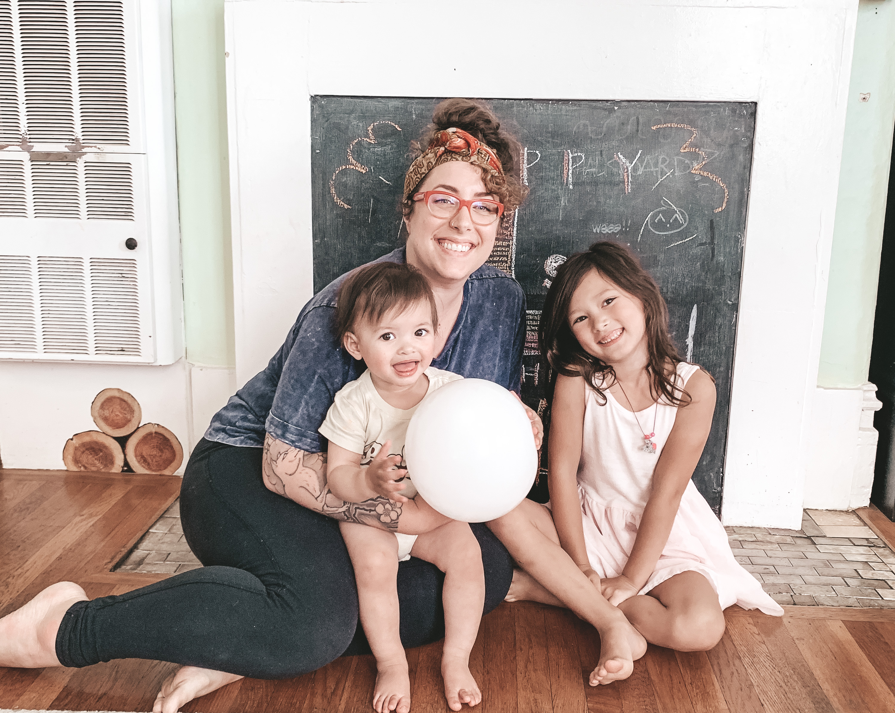

Taylor Reyes Sihapanya
Hi! Thank you for stopping by. My name is Taylor, my pronouns are she/they, and I’m currently a freelance UX/UI Designer as well as Academic Success Manager for UX/UI Design students at Thinkful (a Chegg service). I'm looking to make my way over to UX/UI full-time. A natural at creative problem solving, I have long enjoyed being presented with a problem and being asked: “Taylor, how would you solve for this?”
In my most recent roles in the last 5 years, I’ve provided counseling and guidance to data science, data analytics, web development, and design students. In 2021, I was tasked with working primarily with our UX/UI Design students to build out and implement program improvements at scale while ensuring our design students were well supported (and held accountable to their goals, of course.) Prior to working in EdTech, I worked in Health Education for Kaiser Permanente for 5 years, coaching elderly and young patients alike through refractive procedures like cataract surgery, intraocular lens implants, and LASIK.
It is through these very direct and sensitive user experiences that I have gained my empathetic insights to users. Their motivations and what is most important to them, is what I find is most important to me. While an undergrad at San Franciso State University I studied communication through verbal and non-verbal cues, but design and code have always been intertwined in my life and interests since the age of geocities pages and aol chat rooms.
When I’m not working, you’ll find me spending time with my partner and two young daughters. We love a good mix of the outdoors, video games, and of course, good food. I am a self-proclaimed matcha connoisseur (seriously, ask me about matcha) & I also love picking up new creative outlets. Currently, I am learning how to play the ukulele.
I am open to new opportunities, only if the fit is right. Please feel free to reach out anytime.

Portrait by Tess Givnish
